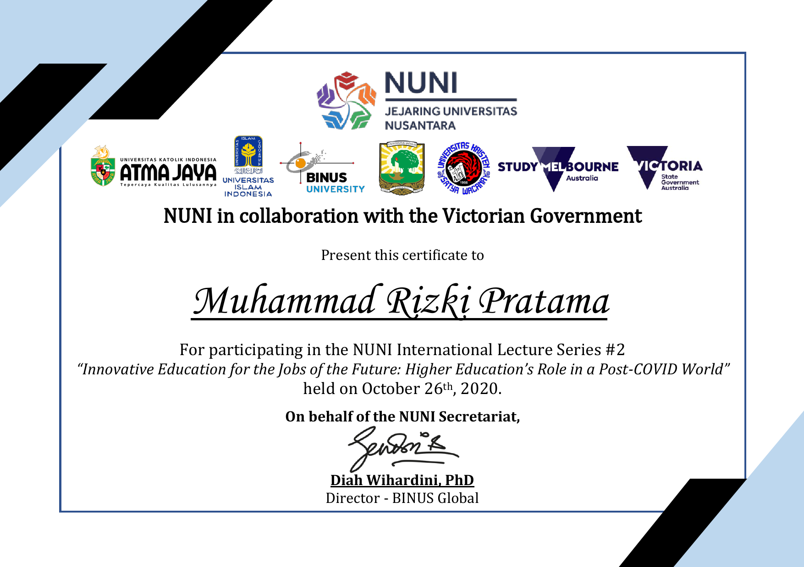
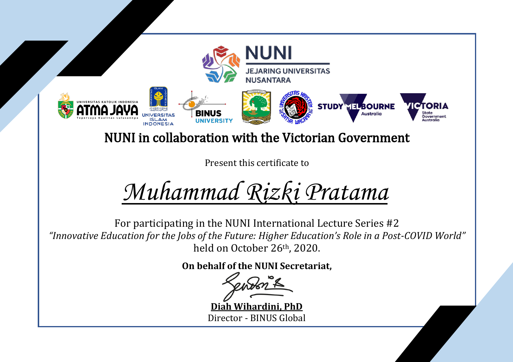

Muhammad Rizki Pratama
Fresh Graduate && Front end Engineer

Fresh Graduate && Front end Engineer
I'm a new graduate from BINUS University, majoring in Computer Science.
I have hands-on experience, having worked previously as an intern.
I have been involved in the Front-End side of development.
Having worked in several fields before, I am interested in getting a UI, Front-end, IT Support position, but not limited to that position, because I'm basically a curious person and willing to spend a lot of time.
learn something new.
And finally, I firmly believe that good communication is the key to success in every aspect of life.
PT. Gitalaras__March 2023 – March 2024
BINUS University IT Division__February 2022 – February 2023
PT. Buana Sukses Pratama__March 2016 – Mei 2016
Yamaap Design__2019 – Now
2019 - Now
PT. Eradi Teknologi Digital__February 2024 - Now
GPA: 2,50
Final Score: 70,45
I created internet network schematics and fixed various kinds of internet network problems
I designs visually appealing graphic for commercial needs creating logos, activity posters, multimedia elements in games & etc
I offer comprehensive digital marketing services to boost your online presence.

International Journal: Designing IoT-Based Smarthome System With Chatbot

3D Design: Created several 3d media elements in the tinkercad platform

GitHub: Some of my work and research portfolios are posted on the GitHub platform


 


If you have any questions or would like to work with me, please contact me via the contact form below or call me.